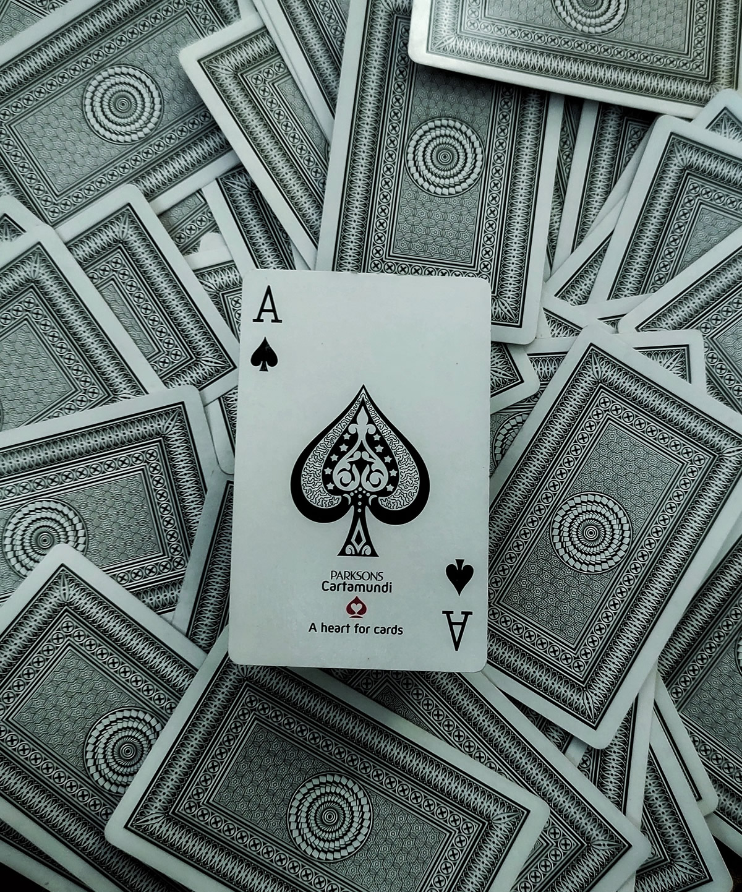
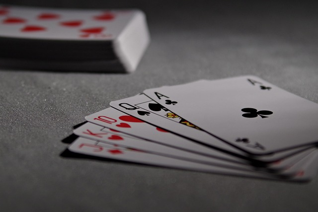
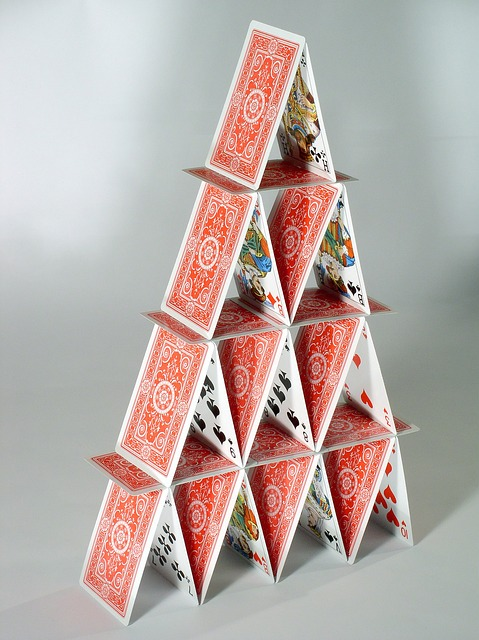
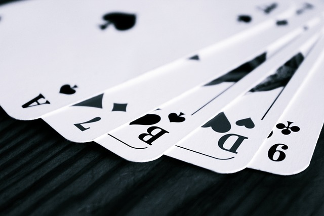

名称について

現代日本語では「トランプ」と呼ぶ。 トランプとは"切り札"という意味があり明治時代、 入国した欧米人がゲームをしながら「トランプ」という言葉を何度も発していた為、 日本人はそれをカードの名称だと勘違いしたものと言われる。
伝来から明治時代まで

日本では16世紀に、ポルトガルからラテンスートのトランプが伝来した。 48枚の札からなっており、ポルトガル語のcarta（カルタ）がそのまま日本語になり、 ひらがなで「かるた」と書かれたり、漢字では「賀留多」「歌留多」「紙牌」などと書かれた。 1597年に長宗我部元親が「博奕かるた諸勝負」を禁止していることから、 この頃には既にカルタが相当流行したものと考えられる。 また1634年の角倉船の絵馬にはトランプをしている男女の絵がある。
ポルトガルから伝わったカルタをもとに日本で作られたカルタは天正かるたと呼ばれる。 天正かるたはその最初の札に「天正金入極上仕上」と記してあったことから、後世そのように呼ばれた。 天正かるたの枚数を増やしたうんすんカルタの名前は17世紀後半の『雍州府志』や大田南畝の『半日閑話』などに見ることができる。 これら西洋カルタ系統のものは早くから賭け事に使われ、 江戸幕府でもかるたの賭け事をしばしば禁じた。 株札・花札などは、いずれもこの系統のカルタから変化したものである。
また、日本古来より存在した歌貝（貝あわせ）などを発展させ、 札を西洋かるたの様式にして作られた百人一首などのカルタは系統が異なるものである。
なお、江戸時代にはフランス式（英米式）のスートも一部の学者には知られていた。
トランプが再び盛んに行われるようになるのは明治時代になってからである。 トランプの名は1885年に出た桜城酔士の「西洋遊戯かるた使用法[8]」に見られ、 カードのゲームと奇術（マジック）が紹介されている。
明治では最初、米国やイギリスから輸入されていたが、 やがて（英米式で）国産品もつくられるようになった。
引用元：ウィキペディア